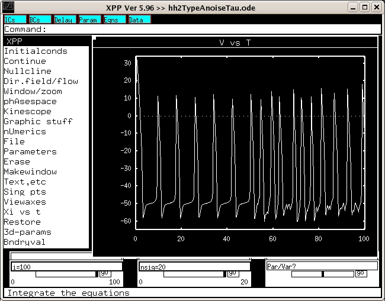

These are models associated with the paper: Lundstrom BN, Famulare M, Sorensen LB, Spain WJ, Fairhall AL (2009) Sensitivity of firing rate to input fluctuations depends on time scale separation between fast and slow variables in single neurons J Comput Neurosci These model files were supplied by Dr. Brian Lundstrom. The hh3d.c code defines a 3D simplified HH neuron model with a slow Na inactivation gate. This file contrains the parameters to implement the model in Figure 11 of the above reference. The hh2TypeAnoiseTau.ode program is a simplified 2D HH model formated for use with xppaut. The parameters correspond to Figure 8 in the above reference. For example figure 8C:  can be recreated by clicking on Par/Val? on the lower right and entering *Par/Var:i Value:100 Low:0 High:100 Then click Initialconds -> Go Continue -> Continue until:50 Click on the middle Par/Var? at the bottom and enter: *Par/Var:nsig Value:20 Low:0 High:20 Click on Continue -> Continue until:100 Finally select Window/zoom -> (F)it These model files updated March 4th 2009.